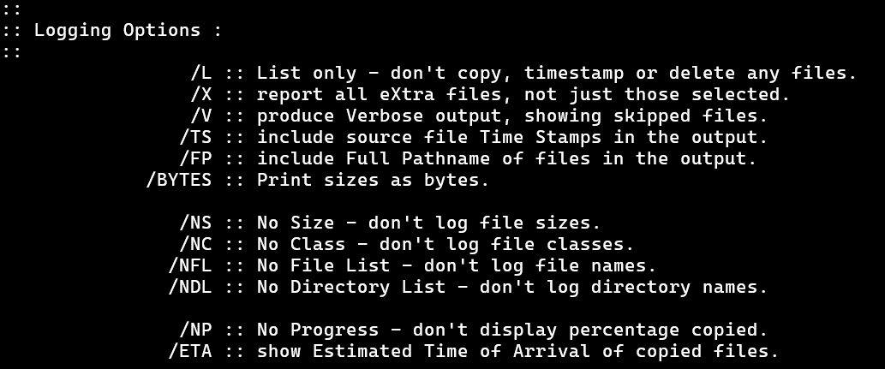

Lesson 9 -
ROBOCOPY Options Part 5: Logging Options
This one is kinda my favourite set of options. We get to play around with what it tells us about the files it copies in the log section. We can even have it save the log section in a separate file to view later if we might need to do that.
Play with the First Set
The image below shows the first set of options.

We can safely play around with combining these together or using them by themselves since they don't really affect anything. They just result in different stuff being reported in the log section. In order to see much effect with /NP and /ETA versus not having them, you will need to use files that have larger sizes than what we've been using so far. So put some copies of your actual stuff in the "original" folder and have at it!
To name just a few of the options, we have already seen that the /L option merely lists what it would do if it actually copied. Like a practice run.
/V will make it call out files in the log as having been skipped, instead of just skipping them.
You can use /NS, /NC, /NFL, and /NDL to make the log section not report certain things, as described in the help information.
Files with a non-zero size will have a percentage transferred shown. You can prevent that from showing up using the /NP options. Or you can have it be estimated time using the /ETA option. Keep in mind that if you are saving a log file, these options will make it longer since each file gets multiple lines - for some reason.
Saving the Log: /LOG, /LOG+, and /TEE
Maybe you want to be able to look back at the files and folders that were copied, skipped, extras, or whatever else after the program has finished and you close the window. Or maybe you just want a log that is more easily searchable than having to manually search the log by eye in the command prompt. In that case, you want to save the log in a log file.
To save a log, decide on a file name for it, and a location. Let's say we are going to save it on the desktop and we want it to be called, "BackupLog.txt". Its a good idea to have it be a ".txt" file since that is the simplest type of file windows has and command prompt can easily output data to it. So run you ROBOCOPY command and include /LOG:path/BackupLog.txt. So for example, my command looks like
Like always, use quotes to enclose the path and file name so that if you have spaces, it doesn't fail on you.
When you run this, it prints only a message telling you where to find the log file. Open that file up to view the same thing that otherwise would have been printed to the command prompt. Pretty neat!
Now, check the "started" time near the top of that log. Write it down somewhere so you remember it cause we are going to change it. Run the exact same command again and compare the new start time with the previous start time.
You should see that it has now changed. That means that every time the back up runs, the log file contains the information about the most recent run. If we wanted to save the previous runs' logs and also make a new log for a new run, then we can use the /LOG+ option instead. Replace your /LOG with /LOG+ and see what happens.
The new log gets added to the end of the previous log. Now be careful running this many times since the file will just get bigger and bigger.
To reduce the size of the file, we can keep only one log in there. To do so, we just have to type in a different file name each time we run the command. If we want to save it automatically as a different file name without manually entering one, then we'll have to keep following the lessons, we'll get to it.
So maybe we want to print the log stuff to the command prompt and have it in the log file. Then use /TEE in addition to the the log option of your choice.
Suggested Logging Options
My suggestions highly depend on what you want from your program. When we begin developing the actual program, we will be using the /LOG+, /TEE, /NP, and /X options. We will also be using the /L option in a separate functionality of the program.
I encourage you keep following along with the lessons to develop the program and build it out but keep playing around with the logging options to see what you prefer for your needs and your vision.